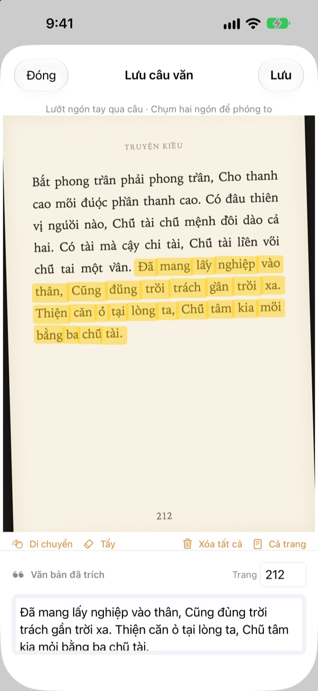
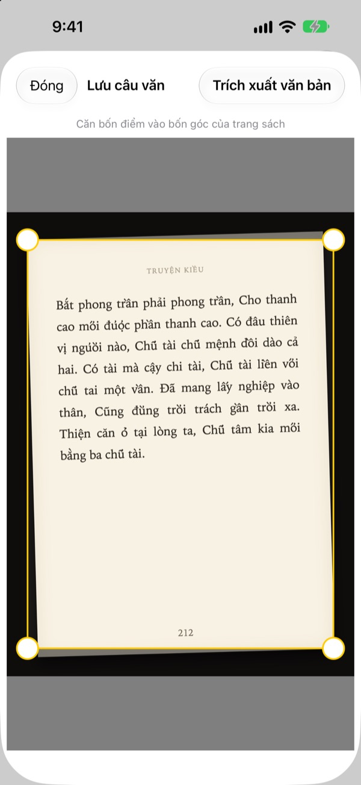
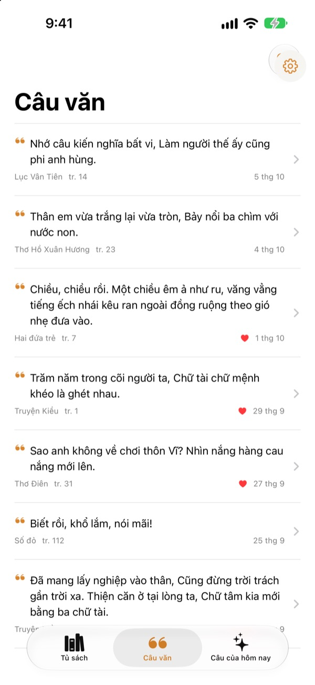
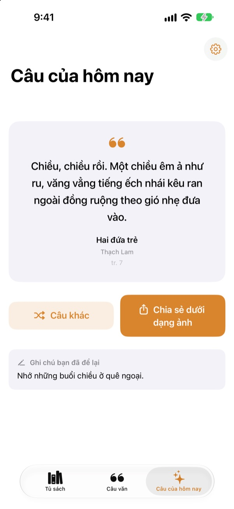

Gạch chân sách
mà không cần bút
Chụp trang sách, vuốt ngón tay qua câu bạn thích, và chỉ riêng câu đó được lưu thành chữ. Tên sách và số trang cũng được ghi kèm.
Mọi tính năng đều miễn phí, không quảng cáo.

Thử vuốt xem
Rê ngón tay hoặc chuột qua bất kỳ câu nào trên trang dưới đây. Chỉ những chữ bạn lướt qua mới hiện lên thẻ.
Những câu hay rồi đi đâu?
Sách mượn thư viện thì không được viết vào. Ảnh chụp trang sách chìm giữa hàng nghìn tấm ảnh khác. Gõ lại vào ứng dụng ghi chú thì hiếm khi nhớ ghi kèm tên sách và số trang. Bookmark Shot giữ lại câu văn, cuốn sách và số trang chỉ với hai thao tác: chụp, rồi vuốt.
Ảnh nghiêng, trang vẫn thẳng
Sau khi chụp, căn bốn góc cho khớp với trang, ngay cả ảnh chụp nghiêng cũng được làm phẳng như tờ giấy. Chữ càng rõ, nhận dạng càng chính xác.
Ảnh có sẵn trong thư viện ảnh cũng dùng được.

Mọi câu văn ở cùng một nơi
Sách của bạn xếp thành tủ sách với đầy đủ bìa, còn câu văn gom về một danh sách. Tìm theo câu văn, ghi chú hoặc tên sách, và thả tim cho những câu muốn đọc lại.
Thêm sách chỉ với một tấm ảnh bìa. Tên sách và tác giả được đọc giúp bạn, và nếu ảnh có mã vạch ở bìa sau thì ISBN cũng được điền.

Gặp lại những câu đã quên
Mỗi ngày, Câu của hôm nay mang một câu bạn đã lưu quay lại, cùng ghi chú bạn viết khi ấy. Đặt widget trên Màn hình chính hoặc Màn hình khóa để luôn nhìn thấy.
Thích câu nào thì biến nó thành tấm thẻ mang dáng giấy và chia sẻ.

Bắt đầu với ba bước
- 1
Chụp bìa
Tên sách và tác giả được điền sẵn, bạn có thể sửa trước khi lưu.
- 2
Chụp trang
Căn bốn góc là trang được làm thẳng.
- 3
Vuốt qua câu văn
Số trang được tìm ra và lưu kèm.
Công cụ trên màn hình đánh dấu
- Vuốt ngón tay
- chỉ chọn những chữ bạn lướt qua
- Thu phóng bằng hai ngón
- phóng to để vuốt chính xác hơn
- Di chuyển
- kéo trang đang phóng to
- Tẩy
- bỏ những chữ đã vuốt
- Xóa tất cả
- bỏ mọi chữ đã chọn
- Cả trang
- giữ toàn bộ chữ trên trang
- Ô số trang
- số trang tìm được, có thể sửa
Khi dùng VoiceOver, chạm hai lần vào một dòng để thêm hoặc bỏ dòng đó.
Mọi tính năng đều miễn phí
Miễn phí
- Thêm sách từ ảnh bìa, ISBN từ mã vạch
- Làm thẳng trang và đánh dấu bằng ngón tay
- Tự động điền số trang
- Tủ sách, tìm câu văn và mục yêu thích
- Câu của hôm nay cùng widget Màn hình chính và Màn hình khóa
- Chia sẻ dưới dạng thẻ ảnh
- Đồng bộ iCloud
Ủng hộ nhà phát triển
- Nếu muốn, bạn có thể gửi một khoản ủng hộ nhỏ trong Cài đặt
- Khoản ủng hộ không mở khóa gì thêm. Ứng dụng vẫn như nhau
Không quảng cáo, không gói đăng ký.
Câu hỏi thường gặp
Ảnh hay câu văn của tôi có bị gửi đi đâu không?
Không. Việc nhận dạng chữ diễn ra hoàn toàn trên thiết bị bằng Apple Vision, ảnh và câu văn của bạn không bao giờ được gửi lên máy chủ. Ứng dụng cũng dùng được khi không có mạng. Xem chi tiết tại Chính sách quyền riêng tư bên dưới.
Ứng dụng đọc được những ngôn ngữ nào?
Việc nhận dạng chữ do iOS thực hiện ngay trên thiết bị. Ứng dụng đọc được sách tiếng Hàn, tiếng Anh, tiếng Nhật, tiếng Trung, tiếng Nga và hầu hết các ngôn ngữ Tây Âu; trên các phiên bản iOS gần đây còn đọc được tiếng Việt, tiếng Thái, tiếng Thổ Nhĩ Kỳ, tiếng Indonesia, tiếng Ba Lan, tiếng Séc, tiếng Hà Lan và các ngôn ngữ Bắc Âu. Tiếng Hy Lạp hiện chưa nhận dạng được.
Làm sao để chỉ chọn đúng câu mình muốn?
Sau khi chụp trang, lướt ngón tay qua câu như dùng bút dạ quang, chỉ những chữ đó được chọn. Phóng to bằng hai ngón để chọn chính xác hơn. Ngoài ra còn có Tẩy, Xóa tất cả và Cả trang.
Tên sách hoặc tác giả bị đọc sai.
Việc nhận dạng bìa dựa vào cỡ chữ để đoán, nên có thể sai với những bìa trang trí cầu kỳ. Bạn có thể sửa tên sách và tác giả trước khi lưu sách.
Số trang bị sai.
Số trang được đọc từ những con số ở mép ảnh. Bạn chỉ cần sửa lại trong ô số trang trước khi lưu.
Tôi có xem câu văn trên nhiều thiết bị được không?
Được. Nếu bạn đăng nhập iCloud bằng cùng một Tài khoản Apple và đã bật iCloud Drive, sách và câu văn sẽ tự động đồng bộ.
Làm sao để thêm widget?
Chạm và giữ Màn hình chính, chạm vào Sửa > Thêm tiện ích rồi chọn Bookmark Shot. Với Màn hình khóa, chạm và giữ màn hình rồi chạm vào Tùy chỉnh. Câu của hôm nay sẽ hiện ở đó.
Camera không hoạt động.
Hãy vào Cài đặt > Bookmark Shot và kiểm tra xem đã cho phép truy cập camera và ảnh chưa. Để chụp ảnh, bạn cần dùng iPhone thật.
Tôi cần những gì?
Một chiếc iPhone chạy iOS 17.0 trở lên.
Liên hệ bằng cách nào?
Gửi góp ý từ màn hình Cài đặt (biểu tượng bánh răng) trong ứng dụng, hoặc email cho chúng tôi theo địa chỉ bên dưới. Chúng tôi thường trả lời trong vòng hai đến ba ngày.
Có câu hỏi hoặc góp ý? Hãy viết cho chúng tôi tại leeo@kakao.com.